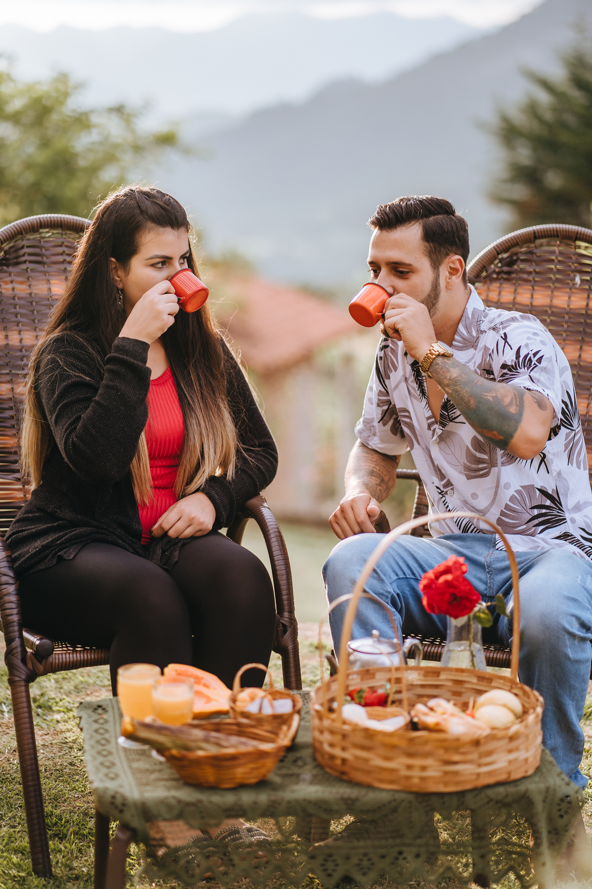

Café da manhã:
O nosso café utiliza produtos típicos da região, como pães caseiros, bolos, pão de queijo, geleias, manteiga, leite, café, sucos e frutas. Nosso café da manhã é servido em uma cesta, onde o hóspede decide se quer consumi-la em seu chalé ou no deck principal, desfrutando de uma bela vista das montanhas. Fica a seu critério.





Política de Hospedagem:
-
Crianças até 6 Anos Não Pagam:
Valorizamos a presença das famílias em nosso espaço. Para tornar a experiência ainda mais acessível, crianças até 6 anos não pagam pela estadia. É uma maneira de compartilhar momentos especiais com toda a família.
-
Pet Friendly:
Entendemos que os animais de estimação são parte da família. Por isso, somos pet-friendly e ficaremos felizes em receber o seu amigo peludo durante a sua estadia. Garantimos um ambiente acolhedor para toda a família, incluindo os membros de quatro patas.